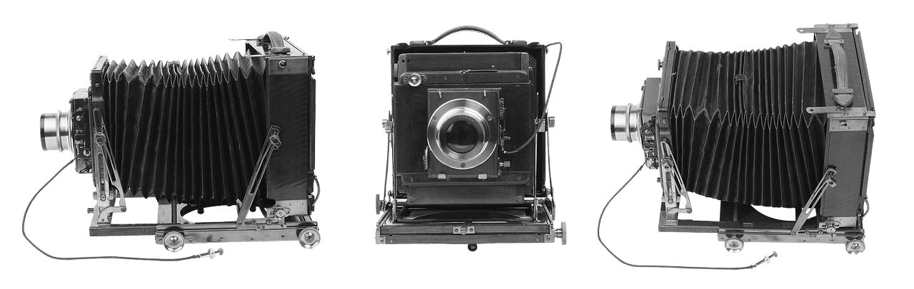
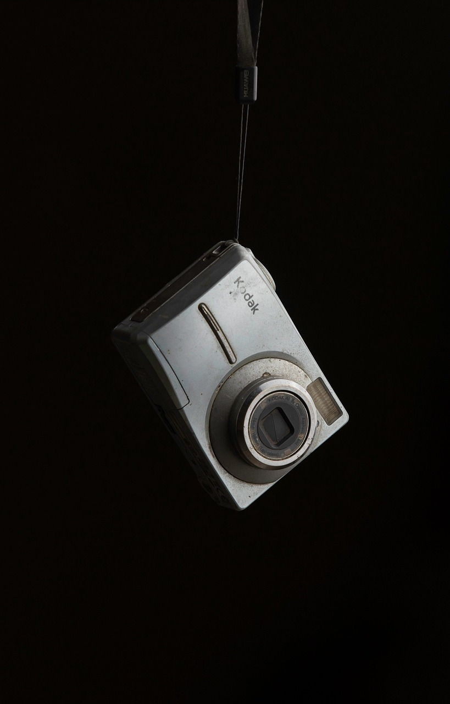
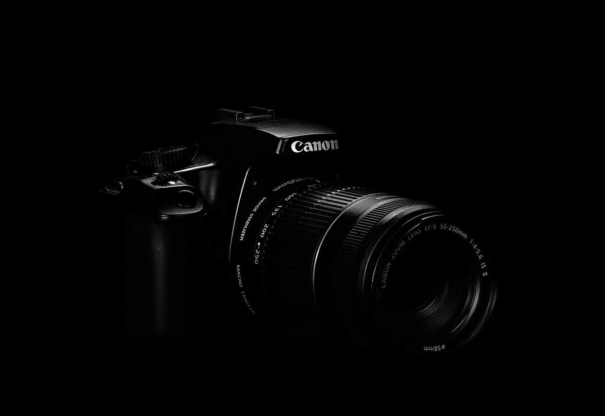

With early photographic inventions such as the pinhole camera/daguerreotype, they introduced the idea that a device could “capture” reality in a given period. These devices began to shape public perception by presenting images as being objective records. This consequently influenced how people understood the world, events, and even themselves. From its origins, photography began as documentation, establishing the foundation for visual truth in culture.

As photography developed overtime, it sparked the rise of film photography which made image-making more common and culturally influential. While this movement was driven by companies such as Kodak and Polaroid, film became the standard for visualizing everyday life in a widely accepted language (from family photos, to mass media shaping how notable/historical moments would be remembered and shared). This era marked the transition from niche and rare scientific images, to more widely accessible methods of visual storytelling.
Early digital cameras and first generations of DSLRs drastically transformed photography from a more mechanical process into an electronic one. This shift brought in instant previews, autofocus improvements, and digital storage re-altering new expectations of accuracy, speed, and overall photographic flexibility.
